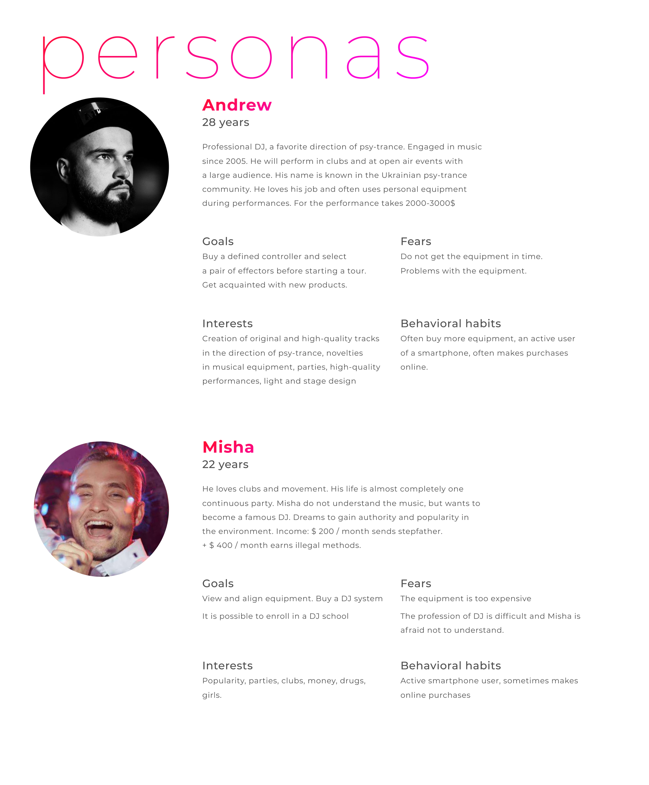
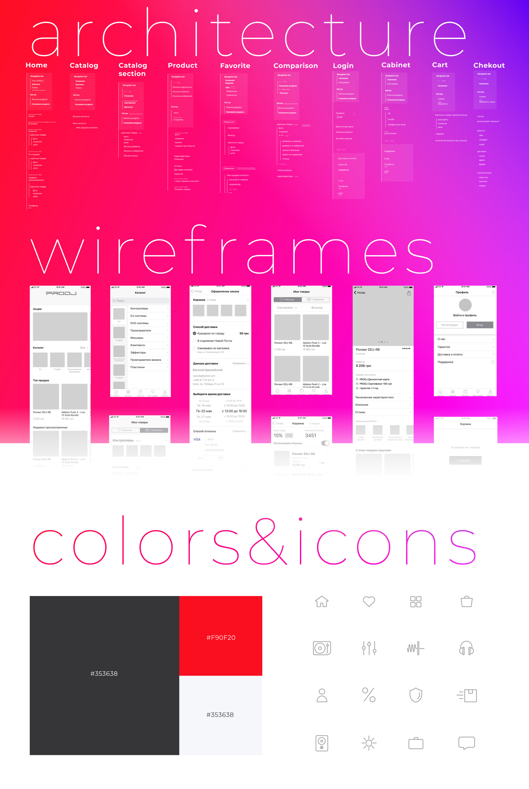

PRODJ Mobile App
Overview
PRODJ is a network of professional DJ equipment stores with over 10 years of presence on the Ukrainian market. The company operates offline stores in Kyiv, Kharkiv, and Odesa, offering DJ gear, sound and lighting equipment, musical instruments, as well as rental, installation, and service.
This case study explores the design of a mobile e-commerce application aimed at simplifying product discovery, selection, and purchasing of professional DJ equipment for users with different levels of expertise.
Users & Personas

UX Goals
The application aims to balance professional depth with accessibility: enabling experienced DJs to quickly find specific gear, while guiding beginners through curated selections, comparisons, and educational content.
Key goals include fast product discovery, transparent pricing, trust through expert recommendations, and a seamless mobile checkout experience.

Outcome
The result is a conceptual mobile app design that reflects the professional nature of the PRODJ brand while remaining approachable for newcomers.
This educational case demonstrates product thinking, UX research synthesis, and interface design tailored to a niche e-commerce domain with high user expectations.